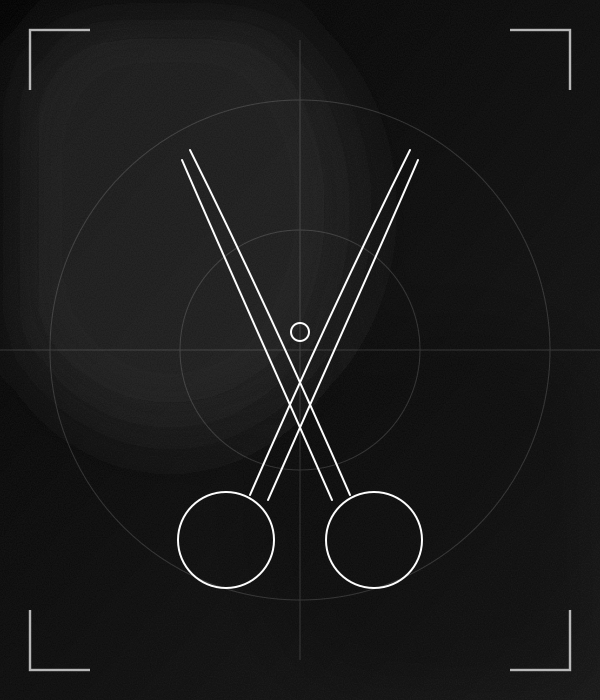
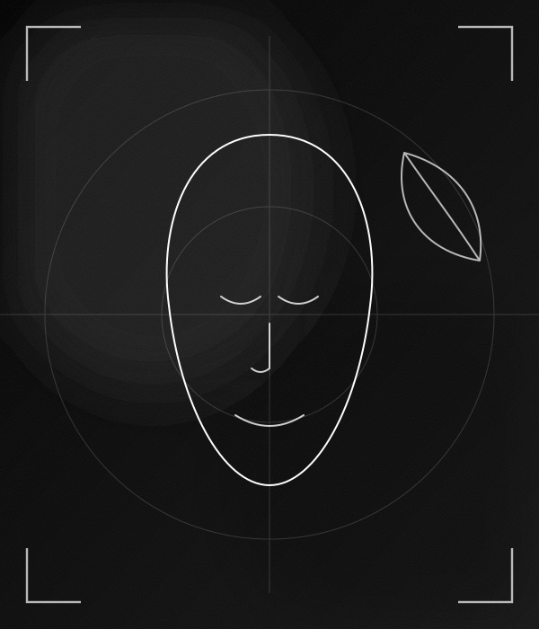
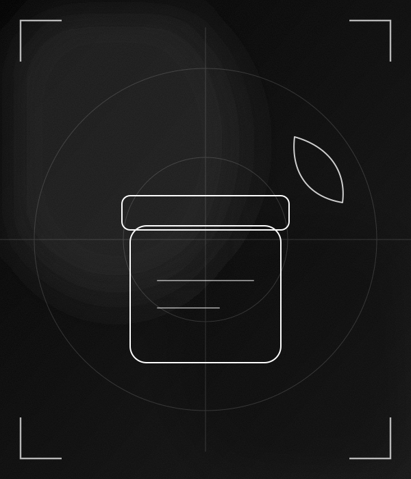
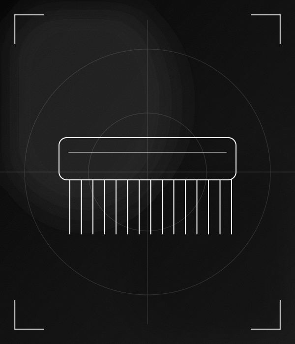
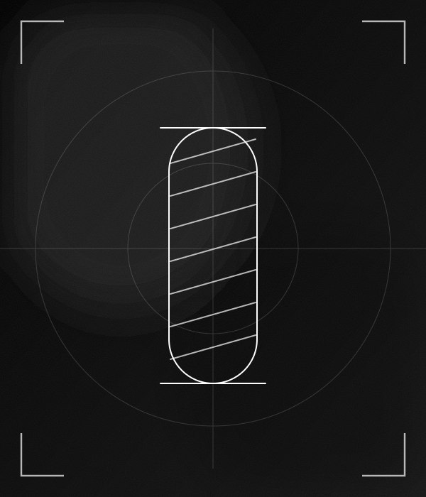
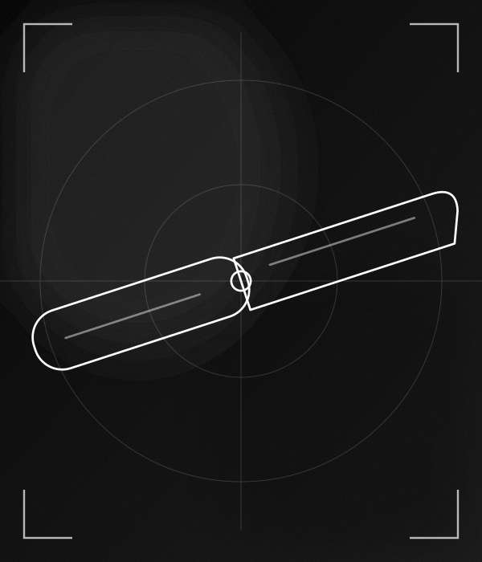
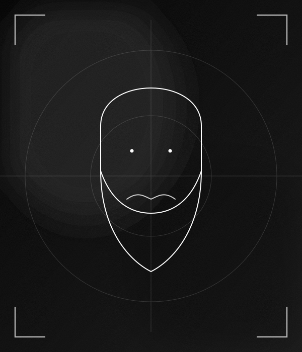

Cortes precisos, a tu estilo.
Highcuts Barber Shop es una barbería en San Miguel, con 4.9 de puntaje y 118 reseñas en Google. Ofrece cortes, barbas, limpieza facial y asesoramiento. Reserva tu cita y ven a conocernos.
Calificación basada en 118 reseñas de clientes en Google Maps.
Agenda tu cita por WhatsApp en pocos minutos.
Av. Lima 562. Fácil de encontrar.

Cortes precisos, a tu estilo.


Perfilado y arreglo de barba.


Cuidado de la piel y un momento de relax.


Asesoría para encontrar tu estilo.


Perfilado y arreglo de barba.


Asesoría para encontrar tu estilo.
Ilustraciones referenciales.
Envíanos un mensaje por WhatsApp.
Dinos el servicio que quieres y cuándo te viene mejor.
Te esperamos en Av. Lima 562, San Miguel.
118 reseñas en Google Maps